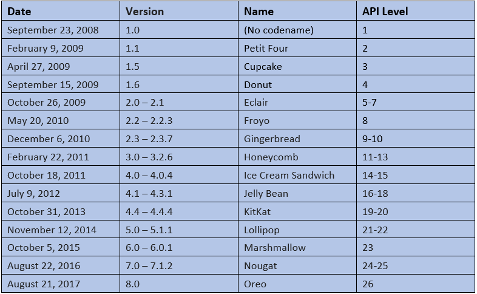

Android History and Versions:-
- Andy Rubin founded Android Incorporation in Palo Alto, California in October ,2003.
- Google acquired Android on 17th August 2005.Since then it is a subsidiary of Google Incorporation.
- Google formed Open Handset alliance(OHA) on 5th November 2007.
What is Open Handset Alliance?
The Open Handset Alliance is a group of 84 technology and mobile companies who have come together to accelerate innovation in mobile and offer consumers a richer, less expensive, and better mobile experience.
Which was the first commercially available Smartphone running Android?
The first commercially available smartphone running Android was the HTC Dream it came to the market as the T-Mobile G1 in the USA, released on October 22, 2008.
Android Version Names:-
Android has its version named after sweets.
Starting with :
Aestro, Blender, Cupcake, Doughnut, Eclair, Froyo, Gingerbread, Honeycomb, IcecreamSandwhich,
Jellybean, Kitkat, Lollipop, Marshmellow, Nougat,Oreo
The most recent being Android 8.0 with Oreo API level 26.
